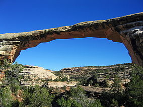
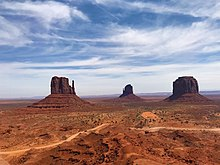
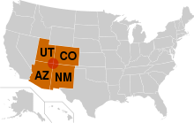

Home
History:
First known as Grayson (after Nellie Grayson Lyman, wife of settler Joseph Lyman), the town changed its name in 1914 when a wealthy easterner, Thomas W. Bicknell, offered a thousand-volume library to any town that would adopt his name. Grayson competed with Thurber, Utah (renamed Bicknell) for the prize. Grayson was renamed Blanding after the maiden name of Bicknell's wife, and each of the towns received 500 books. Wikipedia
Blanding is located near both the Navajo and White Mesa Ute Native American reservations, and a significant percentage of Blanding's population has family ties to these nearby cultures. Blanding is a gateway to an abundance of nearby natural and archaeological resources, including The Dinosaur Museum, Natural Bridges National Monument, Monument Valley and the Four Corners area, Glen Canyon National Recreation Area (Lake Powell), Cedar Mesa archaeological and wilderness area, the San Juan River including Goosenecks State Park, and the Needles district of Canyonlands National Park. It is located approximately 1 hour south of the popular recreation hub of Moab and Arches National Park.
Natural Bridges
Monument Valley
